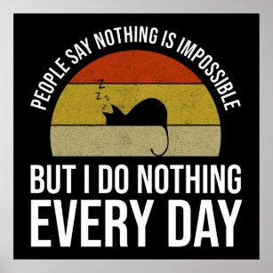
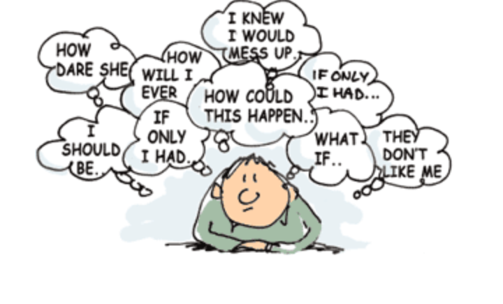
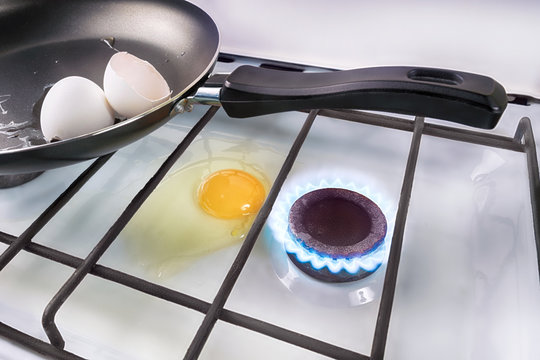
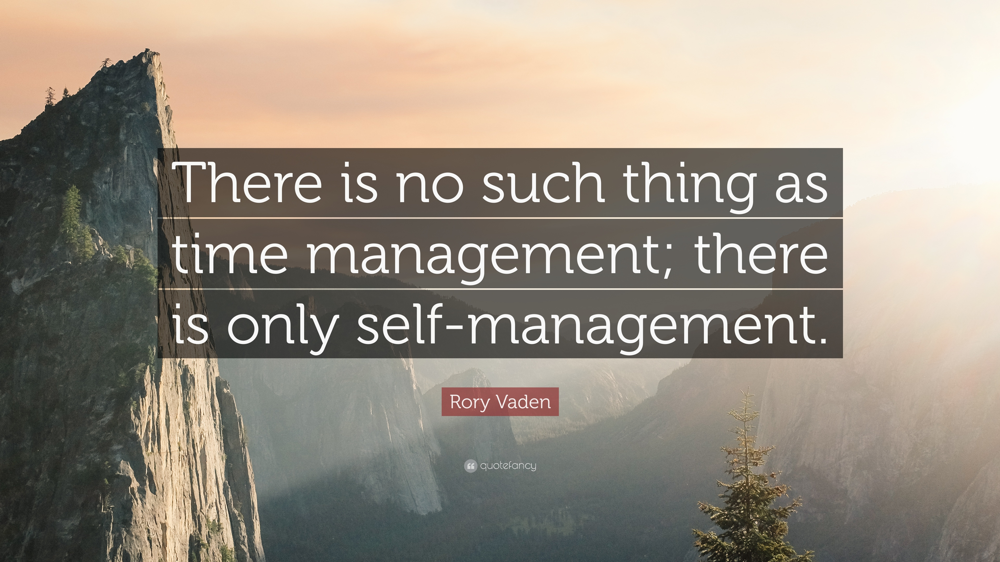
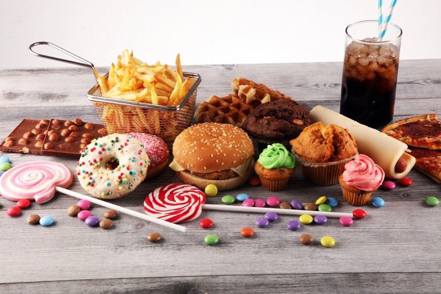
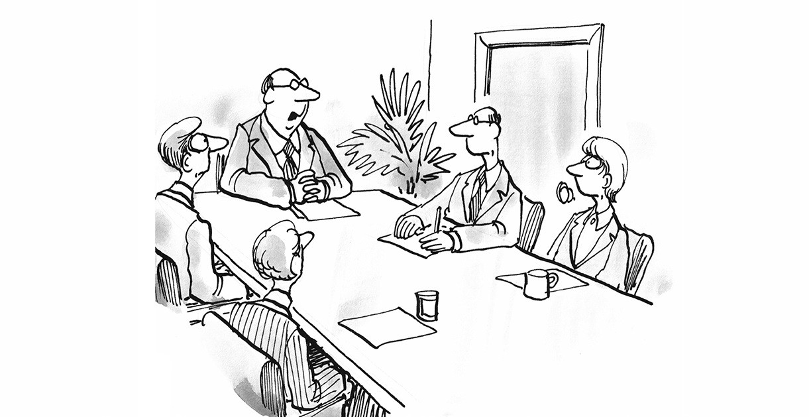
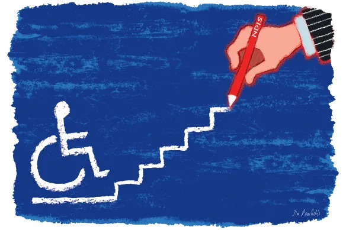

How to Be Unproductive: 8 Tips for Doing Less
This article presents an unconventional exploration of the art of being unproductive, highlighting eight distinct strategies to disrupt the relentless societal pursuit of productivity and embrace the allure of complacency.

In our modern society, the pursuit of productivity has become a revered goal. We are constantly bombarded with messages and tips on maximizing efficiency, optimizing our time, and accomplishing more in less time. Does every second need to be exploited? Maybe. But definitely not in this article. Here you will explore the exact opposite concept of how can you make most (or ideally all) of your time useless.
What if we were to challenge this notion and explore the beauty of embracing comfort and complacency? In this article, we delve into the idea of deliberately slowing down and not stopping until you reach nothingness. So, if you’re ready to break free from the relentless pursuit of productivity and discover the art of being less productive, read on. It might just be the transformative shift you need to find fulfillment in life 🤷
1. Focus on the things you can’t control
Ponder over the weather, the options available in others’ lives, and the potential contributions they can make to your life, among other similar topics. In other words, anything that is out of your control. Focusing on things you can’t control can create a mental and emotional burden which translates in a productivity barrier. It consumes your thoughts and energy, leaving you with less capacity to concentrate on the tasks and responsibilities that are within your sphere of influence. This can lead to a sense of stagnation and therefore inaction, as you become consumed by circumstances beyond your reach.
Secondly, investing your time and energy in uncontrollable things can distract you from taking proactive steps toward achieving your goals. Hence, this can result in wasted time, and foster a strong inactivity momentum. Focusing on things you can not control is a great way to stay behind in many things in life.

2. One bird two stones
This is a great one. When you use two stones to kill a bird it implies that you are devoting more effort and resources than necessary, which can result in wasted time and energy. That can make you effectively inefficient.
You can blend in methods from the rest of the article tips to maximize that and you will be opening yourself doors of opportunity to successfully allocate your resources inadequately. It is important that you never underestimate yourself on that, you can always waste more time and energy. If you achieve something by being productive along the way try to realize step by step how you did it in order to avoid doing so next time.
You can take it a step further and kill one bird with more than two stones. This ensures that you delay as much as possible as you also maximize the time and energy you can waste. While this requires more effort, you can practice and test your limits.

3. Feed your procrastination urge; act on your impulses
This is crucial for achieving to maintain a status of complacency so make sure to take notes here.
Observe your behavior and whenever you find yourself consuming something (in other words, sucking resources without giving anything back) you are in a good way. First, try to identify what that is. Let’s take scrolling on social media as an example. As soon as you figure out that this maintains your stagnation levels, find ways to do that more. For instance, you can do that by adopting strategies such as having your phone next to you all the time and enabling notifications from every app you have; silent mode is your enemy here. If you don’t have many distracting apps, try to download some; Click here for a guide to the ones that can keep you the most from doing productive stuff. Distracting yourself from work by acting on your impulses is a great way to establish and maintain a complacent status.
Fear of failure: Procrastination can stem from the fear of failure or the pressure of meeting high expectations. Try to identify potential things that scare you about a task and foster them even more. Write the fear down and try to make it more scary for you. The more you can internalize the fear the highest the chances of staying like a wardrobe. In case you acknowledge that mistakes and setbacks are a natural part of the learning process try to forget that. Bringing yourself down is crucial for maintaining low contribution levels to society. Moreover, whatever the case DO NOT break the task into smaller steps, as it usually makes it harder to procrastinate.
Put off projects and deadlines as much as possible. As Oscar Wilde said: “Never put off till tomorrow what you can do the day after”.
4. Embrace chaos
No one that wants to stay away from productivity tries to be organized. So try to learn from the masters by stopping yourself from time management activities. Tools like Google Calendar and Notion are really harmful to unproductivity. Having actionable steps and setting deadlines is even worse. Instead, try to live for the moment and embrace the adventure of the unknown. Enrich that behavior by delaying tasks and putting them off until the last minute. In general, nothing from time management principles helps you here.
Prioritizing, as long as it is done right, is the only thing that can be helpful from the time management principles. How do you prioritize staying unproductive? Identify which tasks are the most important to get done and do them last. Especially when you work with others, you will get a lot of attention and be amazed at how fascinated people will be with your approach.

5. Eat sugar and fat
Diet is critical for performance. The saying “we are what we eat” emphasizes the idea that the food we consume has a direct impact on our physical and mental performance.
Sugar is vital for staying stagnant, the more you eat the more like a plant you feel. Consuming high amounts of sugar, especially refined sugars found in sweets and sugary drinks, can lead to energy crashes. Initially, sugar provides a quick burst of energy, so try to restrict the urge on doing stuff at that immediate moment. As long as you can keep yourself calm the first moments, a rapid drop in blood sugar levels follows, causing fatigue and a lack of focus.
Consuming high-fat meals, particularly those high in unhealthy fats like saturated and trans fats, can leave you feeling sluggish and lethargic. These foods take longer to digest, diverting energy away from your brain and reducing mental clarity.

Therefore, with fatigue, lack of focus, and mental clarity, you are making it much easier for you to do less. Do not underestimate this advice, especially if you want to become a professional procrastinator.
To be better at this, try to include in your shopping list as many of these products as possible. They are usually cheap as well. The secret here is to keep your fridge and stock full of these fat/sugary treats so you maintain easy access to them.
6. Talk more do less
This does two main things: 1) can maintain things stagnant for longer periods of time, and 2) builds your reputation as a notorious procrastinator.
On the first point, talking excessively without taking action can solidify stagnation. Time spent in endless discussions or overplanning without execution ensures that resources like time, and energy can be drained effectively not only for you but also for the people that are around you. Taking action is dangerous here because it allows us to test our ideas, refine our strategies, and make necessary adjustments to achieve tangible outcomes. This is something you want to avoid at all costs! Bonus tip: Try to drag as many people to listen to you. One of the most popular and effective ways to do so is to make any email a meeting. In that way, you ensure that not only you does nothing tangible but also your team members.
On the second point, by talking without doing you ensure that you are not only doing nothing but also getting popular about it. This strategy is called by professionals “talking the walk” and it is a renowned method to brand yourself as a non-doer.

7. Challenge yourself carefully
This is tricky because as you challenge yourself in life you usually get better at things and then you set higher standards. Challenge yourself only in tasks that are carefully tailored in making you as inefficient as possible in life. Being focused and picky on what you challenge yourself at is crucial for maintaining the complacent status that you work so hard to establish.
8. Suppress your productive motivation
When you are productively motivated about something, it does not let you procrastinate much. Try to make the subject you are motivated about uninteresting. One way you can do that is to isolate your connection with it or make it difficult to get to. For instance, if you are dedicated to going to the gym you can start by canceling your subscription. Of course, your motivated self might not accept it that easily so you might have to stay registered. If you face this kind of resistance try to subscribe somewhere far from you that it is difficult to get at.

Bonus tip: the more expensive the place you subscribe the better is for maintaining low productivity status. That is because you use more of your resources on something that does absolutely nothing.
If your motivation resistance is strong, and you are pushed to work out at home, double down resistance by following point 5. You never go wrong by eating trash when it comes to combatting motivation. If your motivation resistance is extra strong do not worry, there are other ways to derail it. That is by trying to be a perfectionist. Take the example of Howard Hughes and you will realize the importance of it.
The Spruce Goose, officially known as the Hughes H-4 Hercules, was a massive flying boat aircraft designed and built by Howard Hughes and his team during World War II. It was meant to serve as a transport aircraft for troops and supplies, and it was constructed primarily from wood due to wartime restrictions on aluminum. In 1942, the US government allocated to Hughes a budget of $18 million to build this aircraft for WW2.
While the original contract called for a two-year development period, it took over five years for the aircraft to be completed. Hughes was a perfectionist, and his relentless pursuit of an ideal design led to numerous delays and budget overruns. By the time it was finally built, the war had already ended, rendering the original purpose of the Spruce Goose obsolete.
The Spruce Goose made only one short flight in 1947, piloted by Hughes himself. After that, it never flew again. The massive aircraft became a symbol of Hughes's perfectionism and the significant results you get when you prioritize perfection over practicality.
The Spruce Goose example demonstrates that the drive for perfection can lead to significant delays, increased costs, and inevitably to great success of being unproductive. So if you start working out by pure motivation for instance, try to perfect a technique of exercise, i.e. chest press, by using 0 weights and trying that (preferably without equipment) 1000+ times. Your unproductiveness will skyrocket.
8. Find something that makes you miserable
Misery tends to foster a specific mindset and self-talk, where you focus on your problems, limitations, and failures. This thinking pattern solidifies an attitude of not doing anything and leads to self-doubt about you being able to do stuff. If you are able to find that in your life, you automatically got into an express line to get fewer things done.
Conclusion
Try to celebrate times of complacency with long-lasting parties which drag more resources and don’t give something back to society. You will know when you become really good at procrastination when you realize that you are not even getting the parties done.
At that point you can spice things up by doing different unproductive stuff you did not have the chance to do before such as watch movies, stay up all night with no reason, go clubbing all day, play a ton of videogames, spend money on dog food without having a pet and much more! Please feel free to include more stuff that are not productive in the comments below, interested to hear your ideas!
Please clap 👏 on medium if you find this post helpful or inspiring:)